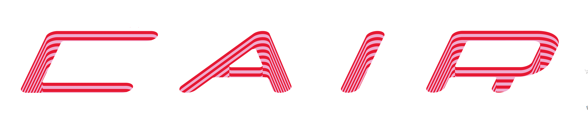
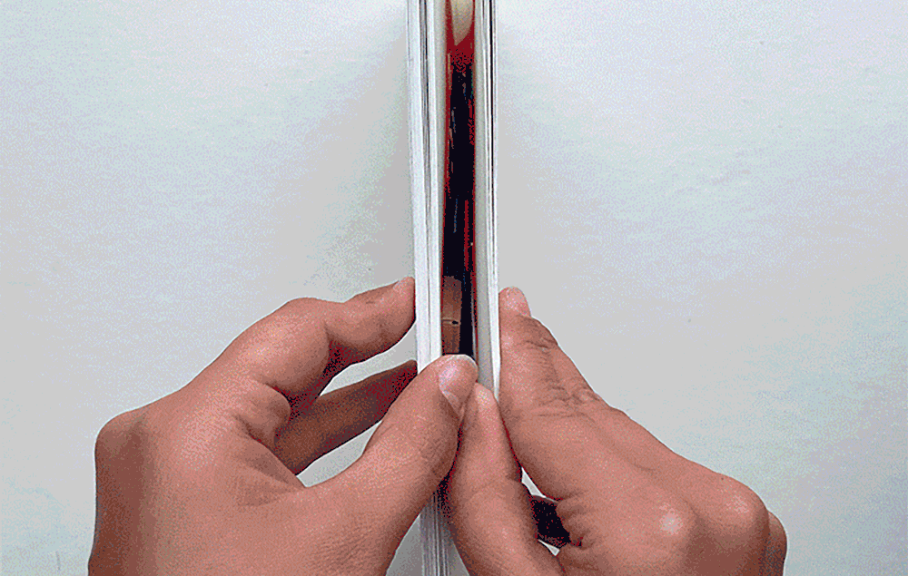
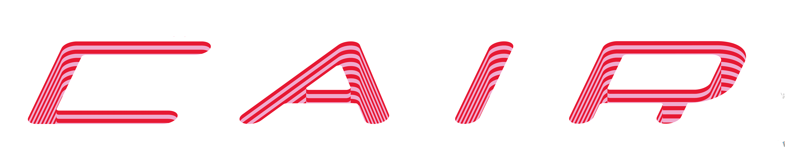
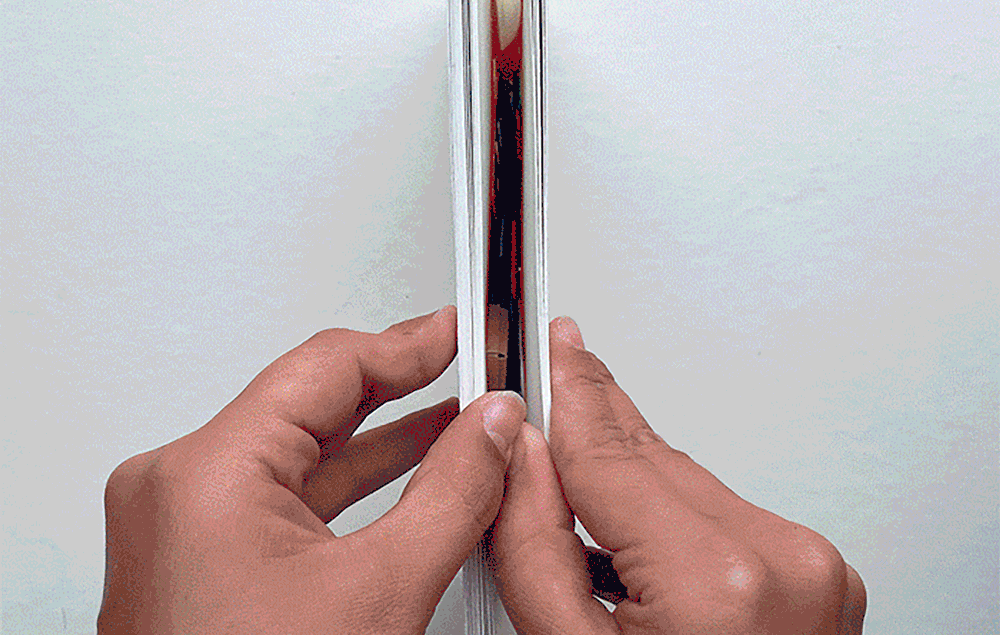
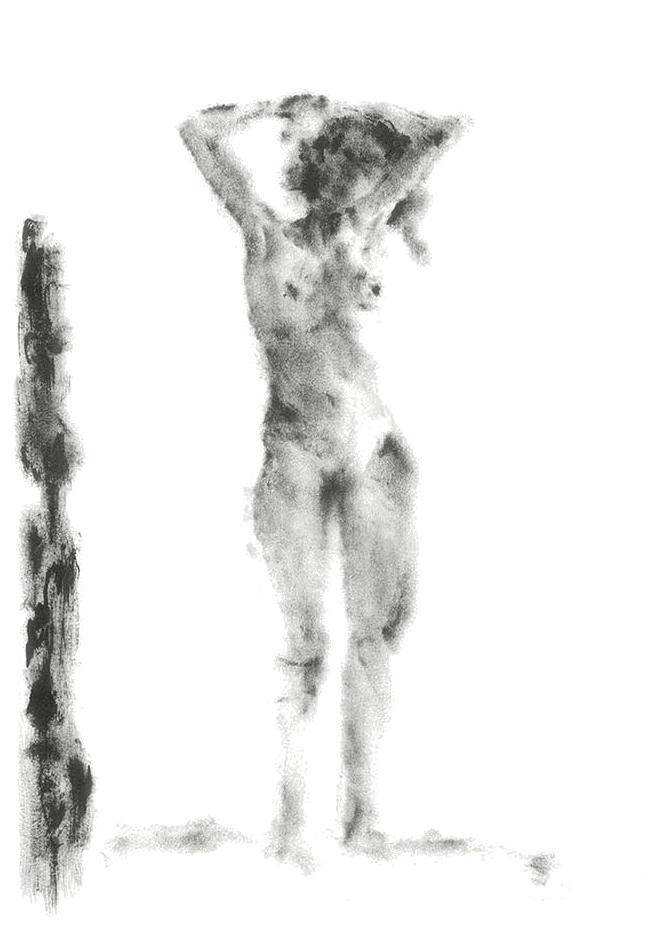

vários
projetos pessoais.
 



Para além dos projetos mais "sérios" ou académicos, eu tenho alguns interesses e pequenos projetos que vou explorando no meu tempo livre, como: fotografia analógica, pintuta e ilustração.
